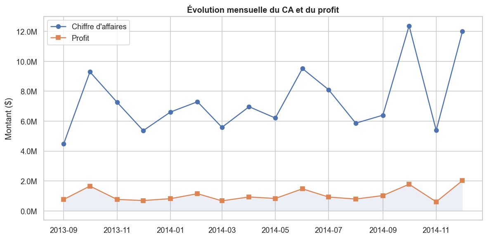
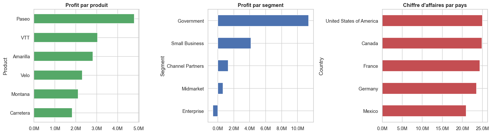
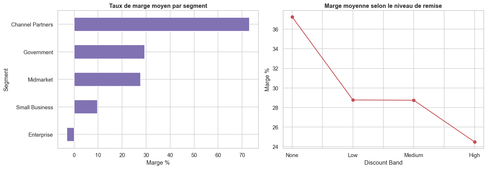
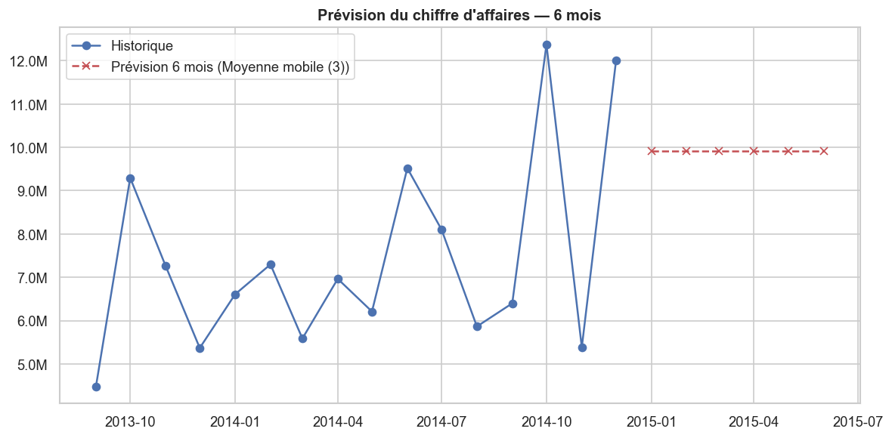

Pipeline BI complet sur 700 transactions (2013–2014) : nettoyage des données, KPI financiers, compte de résultat, prévisions et dashboard interactif — avec Python, SQL et Power BI.
Résultats agrégés sur l'ensemble de la période analysée.
Les conclusions métier tirées de l'analyse.
Graphiques produits par le notebook Python (Matplotlib / Seaborn).




Une chaîne analytique reproductible, de la donnée brute à la décision.
Tous les artefacts du projet.